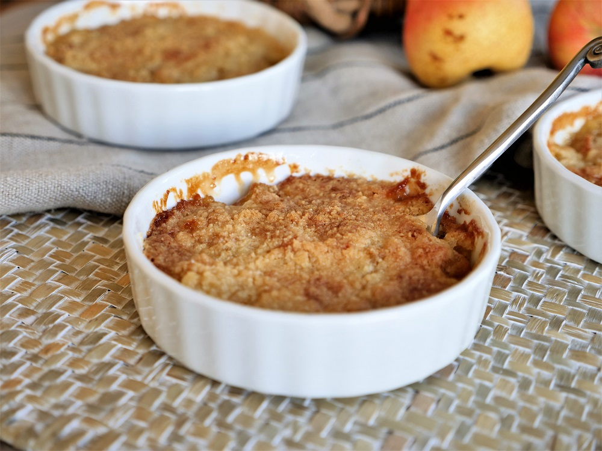

Le Crumble aux poires (ça marche aussi avec des pommes)
Ingrédients
- 30gr de beurre
- 60gr de farine
- 60gr de sucre
- 1 ou 2 belles poires
- 30gr de sucre
- Un peu de beurre
Préparation
- Mettre dans un bol le beurre (froid), le sucre & la farine pour le crumble.
- Mélanger à la main jusqu'à la texture du crumble
- Etaler sur une plaque et mettre au four pas trop chaud jusqu'à la bonne texture et sortir du four avant caramélisation. Puis laisser refroidir.
- Coupe les fruits en brunoise grossière, les mettre dans une poele froide avec le beurre et le sucre. Faire cuire jusqu'à caramélisation
- Déposer les fruits compoté au fond du récipent, recouvrir de crumble jusqu'au bord. Mettre au four en mode salamandre qqes minutes pour faire caraméliser le crumble
